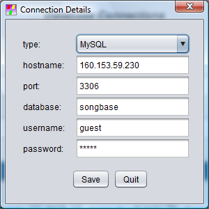

SongBase
is an Open Source software application for
making music on your Microsoft Windows or Linux
laptop or PC. Songs can have up to 15
instrumental voices and a percussion track with
instruments chosen from a soundbank of 128
instruments. Either the default soundbank
or one of your own can be used. Songs can
be developed, tested and edited very quickly and
easily by virtue of the database structure and
the JFugue MusicString notation.
Notes are specified by their name and octave or
by their MIDI value and their durations are
specified either by character code, or
numerically.
You can use notes from C0 to G10, corresponding
to MIDI values 0 to 127. Middle C is C5.
Sharps, flats and naturals are placed
immediately after the note letter so B-flat
above middle C is written as Bb5.
Notes can be entered manually or by picking from
graphic Treble, Alto, Tenor and Bass staves
within the MusicString editor.
Within the application, use File/Template
to create a song, then File/Tree View
and expand the nodes. Select each bar in
turn and enter the notes.
Select "Song" and press Play to play back your
music. From the File menu, you
can export to MIDI, MusicXML or WAV for music
processing or publishing. The WAV files
can be opened in Audacity,
then exported to MP3. Please see the Documentation
for more details.
Download SongBase
3.0.3
You
can collaborate with your colleagues on a song
by using a MySQL shared database. You
can also export and import songs in XML
format. Use File/XML Import to import
the demonstration songs.
If you are setting up a shared database, use
the Database/Database
Connections form to enter the
connection parameters obtained from your
Database as a Service provider. Then use
File/Create
Tables to create the database tables
on the remote host.
We recommend that you create a user in your
MySQL database called 'guest' with EXECUTE
as the only privilege. Connecting as
'guest' enables read access to all songs and
also the ability to create and log in to
individual user accounts for the creation of
songs. Full access to these songs can
optionally be shared with selected other user
accounts.
Before
running SongBase on
Microsoft Windows you will first need to
install the latest version of Java from Java.com
or, if you are using Linux Ubuntu,the
latest version of OpenJDK Java Runtime from
the Ubuntu Software Center. For best
results on Linux Ubuntu, we recommend using
the Gnome Desktop Environment.